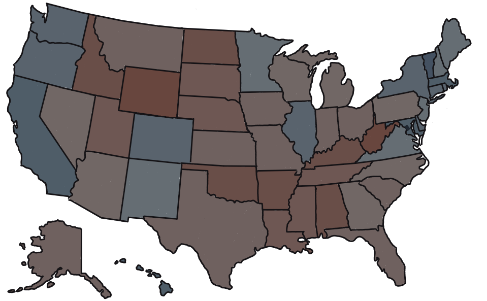

←
Year
Year
2025
2024
2023
2022
2021
2020
2019
2018
2017
2016
2015
2014
2013
2012
2011
2010
2009
2008
2007
2006
2005
2004
2003
2002
2001
2000
Region
Region
United States
Indiana
Ohio
Michigan
Election Type
Election
Presidential
Primaries
House
Senate
Governor
Ballot Measures
Dataset
Dataset
Vote Margin
Swing
Search
Plexus
Home
›
United States
›
Elections
United States
